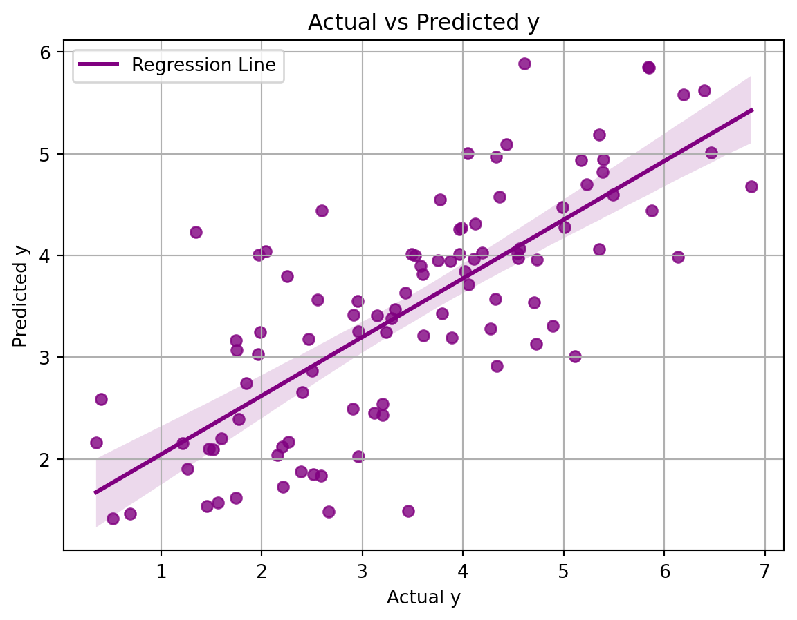

Welcome to the fascinating world of predictive analytics! Today, we’re diving into one of its most vital tools: regression. Regression isn’t just a statistical method; it’s the secret sauce behind forecasting outcomes with stunning precision. Picture this: you’re trying to guess the value of a house. How do you do it? You look at its size, the number of bedrooms, location, and a whole bunch of other details. This is where regression shines!
Linear Regression
Linear regression is a popular regression learning algorithm that learns a model which is a linear combination of features of the input. It attemts to minimize the difference (not really but we will get into that) between its prediction and target values. Now, if I ask you to learn something by trial and error, you will then ask me well how do I know if I am getting closer to actual solution? Any regression algorithm needs to evaluate its performance during training period. So, during training a linear algorithm, we will set its objective to minimize error defined as a loss function or cost function.
We can use a little bit of mathematics to understand the concept of linear regression. A linear regression defines its output \(y\) given the feature \(x1\) and \(x2\) as - \[ y = \beta_0 + \beta_1 x_1 + \beta_2 x_2 \] Where \(\beta_0\) is the intercept and
\(\beta_1\) and \(\beta_2\) are weights
For this linear regression equation the cost function is typically defined as the Mean Squared Error (MSE). The MSE measures the average of the squares of the errors, which are the differences between the observed values and the values predicted by the linear model. The cost function can be written as:
\(J(\beta_0, \beta_1, \beta_2)\) is the cost function.
\(n\) is the number of observations in the dataset.
$ y_i$ is the actual observed value of the dependent variable for the ( i )-th observation.
\(x_{1i}\) and $ x_{2i}$ are the values of the first and second independent variables for the $ ith$ observation.
The goal in training the linear regression model is to find the values of \(\beta_0\), \(\beta_1\), and \(\beta_2\) that minimize this cost function.
Lets see it in action
import numpy as npimport matplotlib.pyplot as pltfrom sklearn.linear_model import LinearRegressionfrom sklearn.metrics import mean_squared_error# Generating synthetic datax1 = np.random.rand(100, 1) # feature 1x2 = np.random.rand(100, 1) # feature 2y =1+2*x1 +3*x2 + np.random.randn(100, 1) # target variable with some noiseX = np.hstack((x1, x2))model = LinearRegression()model.fit(X, y)# Coefficients (beta_1 and beta_2) and intercept (beta_0)beta_0 = model.intercept_[0]beta_1, beta_2 = model.coef_[0]y_pred = model.predict(X)# Calculating the Mean Squared Error (MSE)mse = mean_squared_error(y, y_pred)equation =f"y = {beta_0:.2f} + {beta_1:.2f}x1 + {beta_2:.2f}x2"mse_text =f"MSE: {mse:.2f}"equation, mse_text
('y = 0.81 + 1.95x1 + 3.57x2', 'MSE: 0.94')
The trained linear regression model based on the synthetic data is represented by the equation:
\[ y = 1.08+ 1.72x_1 + 3.03x_2 \]
The Mean Squared Error (MSE), which is the average of the squares of the errors between the observed values and the values predicted by the model, for this training is:
\[ \text{MSE} = 0.93 \]
This MSE value reflects the average squared difference between the predicted values and the actual values in the dataset, and the objective in training is to minimize this error.
If we plot the regression:
import seaborn as sns# Using seaborn's regplot for plottingplt.figure(figsize=(7, 5))sns.regplot(x=y.flatten(), y=y_pred.flatten(), color='purple', line_kws={'label': 'Regression Line'})plt.title('Actual vs Predicted y' )plt.xlabel('Actual y')plt.ylabel('Predicted y')plt.legend()plt.grid()plt.show()

Decision Tree
Decision Tree is a nonlinear algorithm mainly for classification but we can repurpose it for regression analysis.A decision tree is an acyclic graph that can be used to make decisions. In each branching node of the graph, a specific feature j of the feature vector is examined. If the value of the feature is below a specific threshold, then the left branch is followed; otherwise, the right branch is followed. As the leaf node is reached, the decision is made about the class to which the example belongs. We can showcase the generated tree below:
Let’s break down how a decision tree sorts data. We start with a dataset and we want to make predictions or decisions based on this data. Here’s the step-by-step process:
Starting at the Top
We begin with all our data at the root node.
First Question - Evaluating x2
Is x2 less than or equal to 0.471?
Yes: Move to the left child node.
No: Move to the right child node.
Going Left - Further Evaluation of x1
Now, is x1 less than or equal to 0.72?
This node is further split into two branches based on this condition.
Going Right - Evaluating x1 Again
Is x1 less than or equal to 0.303?
Similarly, this node is split based on the condition.
Ending Up at a Leaf
The leaf nodes are the endpoints where predictions are made based on the data that reached the leaf.
At the end of this process, our data is segmented into groups that help us make informed decisions or predictions. making predictions with our data.